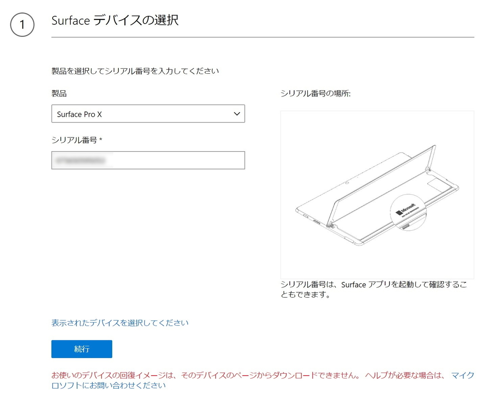
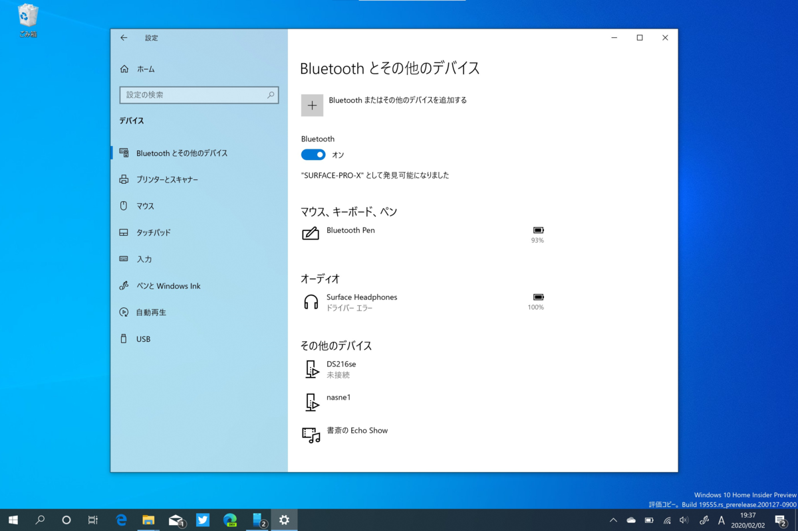

Surface Pro X が文鎮になりかけたけど、事なきを得た話
公開日：
ARM64 の検証機として Surface Pro X を購入。さっそく、Windows Insider Program の Fast リングに加えた*1。

というのも、Windows 10 の最新プレビュー版では「タスク マネージャー」がいい感じにアップデートされていて、プロセスのアーキテクチャーを簡単に確認できるのだ。
Windows Insider にしたらプロセスが x86 か ARM64 か一発で分かって便利だぜー pic.twitter.com/N8xb8BOHw4
— 新型だるやなぎウイルス (@daruyanagi) 2020年1月21日
Google Chrome はともかく、DAX3API *2なんかも x86 で動いてるんだな。こういうのが ARM64 ネイティブになれば、バッテリーライフはもっと伸びると思う。
――それはさておき。
Build 19546 は無事に適用されたのだが、そこから Build 19551 へアップグレードするとき、それは起こった。
Windows Insider のアップデートなう pic.twitter.com/y3sg9nVpH4
— 新型だるやなぎウイルス (@daruyanagi) 2020年1月23日
なぜか更新画面で文字化けが発生する。それだけならまだいいのだけど、アップグレードの完了後、PC を起動しても Windows ロゴから先に進めず、フリーズしてしまうようになった。
まぁ、Windows Insider Program は不具合上等のプレビュービルド。こういうこともあるよね、と思い、リカバリーを始めた。起動ディスクはまだ作ってなかったので、Microsoft のサポートページにアクセスして、Surface Pro X のイメージをもらわなければならない。しかし――

おーまいがー、ふぁっきんしっと！ もう一度再起動を試みるが、やはり起動しない。「まさかの文鎮というやつでは？」と一瞬焦ったが、ハードリセットを何回か繰り返すうちに、ロールバック処理が始まった。そう、最近の Windows 10 は Windows Update が原因で起動しなくなったことを検知すると、それをアンインストールして、元の環境を（できるだけ）復旧してくれるのだ。賢くなったよね、Windows 7 から乗り換える気になったよね！
この問題を「フィードバック Hub」に投げて、Twitter でも軽く言及すると、米国の Windows 10 チームのなかの人と思しき人からコンタクトがあり、「見たことないエラーだから詳細を教えてくれ」という。すでに「フィードバック Hub」へ投稿済みのリンクを教えてあげると、次の Build 19555 ではしっかり対処された。
“We fixed an issue resulting in ARM64 devices not being able to upgrade to the previous build” あざっす！ / “Announcing Windows 10 Insider Preview Build 19555 | Windows Experience Blog” https://t.co/PH87ig8qIh
— 新型だるやなぎウイルス (@daruyanagi) 2020年1月31日
教訓、教訓。
フィードバックはちゃんとしよう。結構直してくれるぞ！ 自分の場合、「Bluetooth 機器のバッテリー残量を見れるようにしてほしい」とフィードバックしたところ、ちゃんとなかの人から「いいアイデアだな、そのうち付けるぜ！」と返事があって、実際に実装された。日本語 IME などのトラブルはとくに、日本人ユーザーが言わなければ改善されることはないので、積極的に文句を付けに行きたいところだ。
